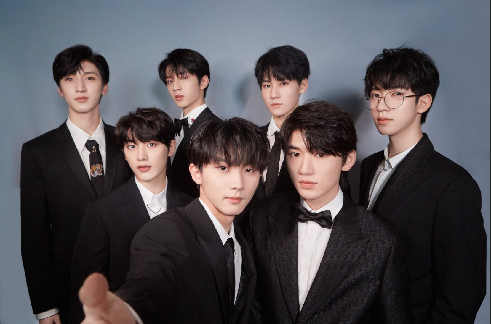
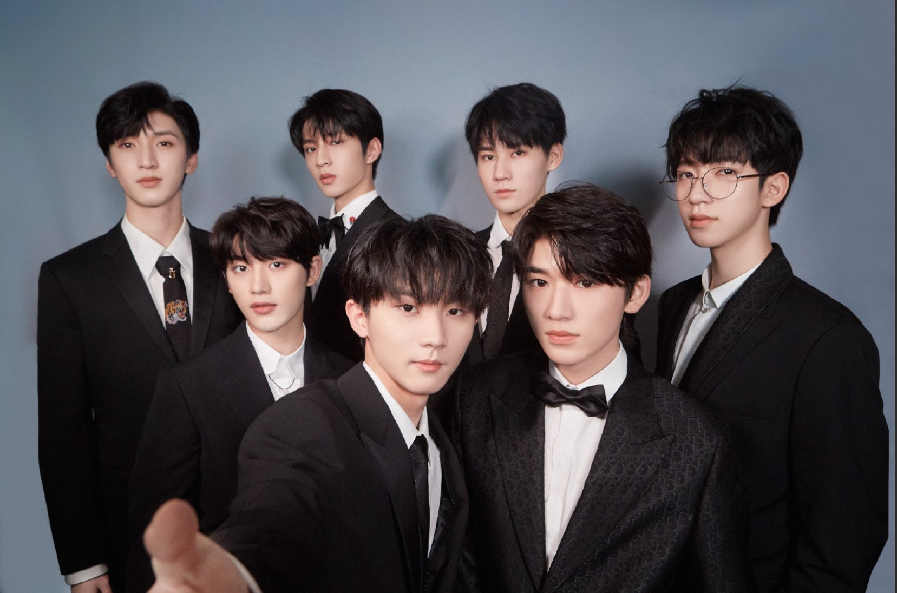

人物评价
1、时代少年团拥有清新的外形和活泼的性格,他们在练习生时期就通过各种形式出现在大众面前,并获得了一定的知名度。马嘉祺在团里有着丰富经验，在很多方面都展现着自己的担当。在采访时，他能沉稳淡定应对每一个问题，给人清醒而纯粹的感觉。
2、丁程鑫即使在舞台上也喜欢做最真实的自己,他演唱的歌曲充分抒发了自己想表达的情绪。
3、宋亚轩在翻唱《老男孩》时,他的声音柔软又清澈。成长后，他拥有了磁性的嗓音和更加成熟的演唱技巧。
4、刘耀文的舞台可以用燃炸来形容,他用帅气的舞姿点燃全场。虽然他年纪最小，但是展现出不输任何人的气场和舞台实力。
5、张真源一心只想不断往上走,他习惯用乐观的态度面对一切。
6、严浩翔对待音乐的态度非常真实,有一种深入的鉴定和笃信。无论哪一面，他展现的都是最真实的自己。
7、贺峻霖对于学习有着超乎同龄人的认知,但在面对自己喜欢的偶像时，他也会露出自己藏不住的孩子气 。
 
